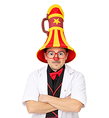
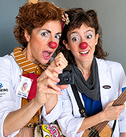
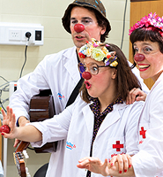
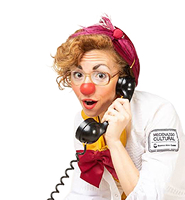

Quiénes Somos
Este programa funciona desde 2008 y tiene como eje la realización de espectáculos infantiles musicales y teatrales de alto nivel artístico con el objetivo de lograr que los hospitales sean ámbitos más agradables para los niños, niñas y adolescentes, sus familias, personal médico y no médico. Creemos en que se puede modificar la realidad hospitalaria positivamente, y que encontramos en el hospital un espacio para crear junto a los niños internados otro tipo de experiencia. Porque los niños enfermos, aún graves o con enfermedades terminales, nunca pierden las ganas y la necesidad de jugar.



